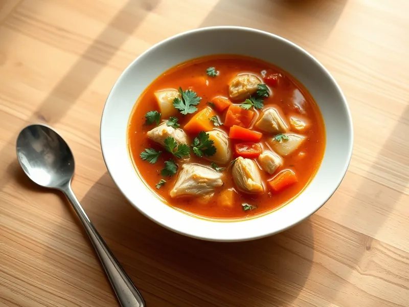

Чорба из курицы по-молдавски
Кисловатый молдавский суп с курицей, болгарским перцем, помидорами и петрушкой
70 мин5 порц.185 ккал на порциюБ 15 · Ж 7 · У 15Европейская кухня
Открыть в приложении: порции, таймеры, список покупок
Продукты на 5 порц.
- Куриные голени5 шт
- Картофель2 шт
- Морковь1 шт
- Лук репчатый1 шт
- Перец болгарский1 шт
- Помидоры2 шт
- Лимон0,5 шт
- Петрушка0,5 пучка
- Соль1 ч. л.
- Вода2000 мл
- Сметана 20% по желаниюпо вкусу
Как готовить
- Залейте куриные голени холодной водой, доведите до кипения на сильном огне, снимите пену и варите на слабом огне 30 минут.
- Достаньте голени, отделите мясо от костей и верните в кастрюлю.
- Добавьте мелко нарезанные лук, морковь и картофель, варите на среднем огне 10 минут.
- Положите болгарский перец полосками и помидоры кубиками, посолите и варите 10 минут, пока картофель не станет мягким.
- Влейте сок лимона, всыпьте рубленую петрушку и выключите огонь. Подавайте со сметаной.
Совет. В Молдавии чорбу закисляют квасом из отрубей, лимонный сок дома даёт похожую лёгкую кислинку.